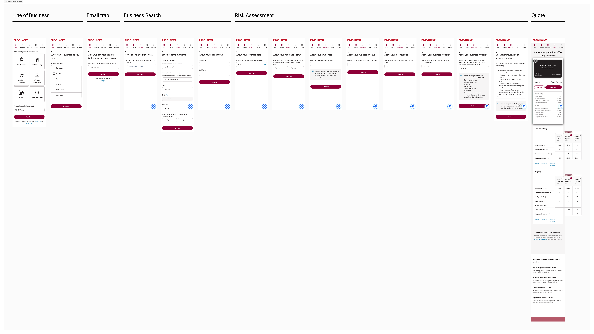
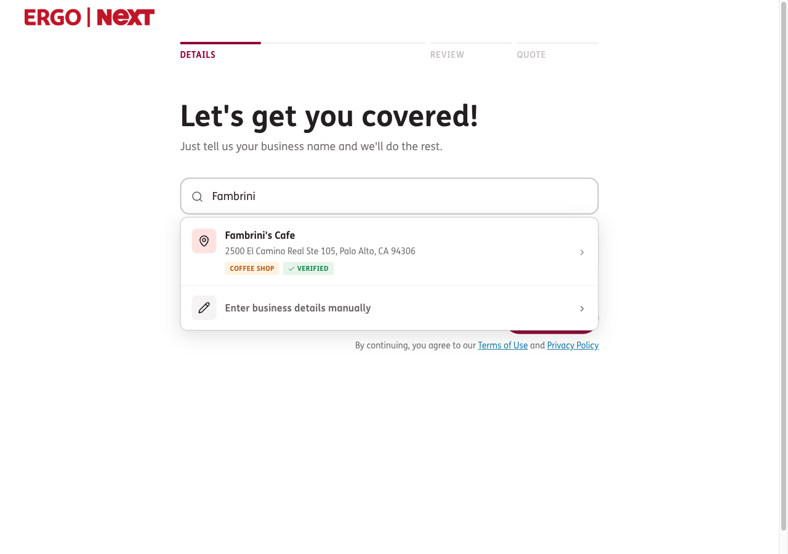
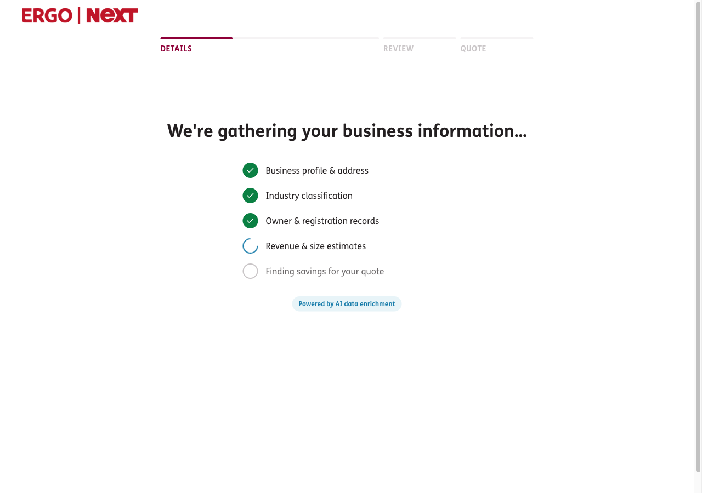
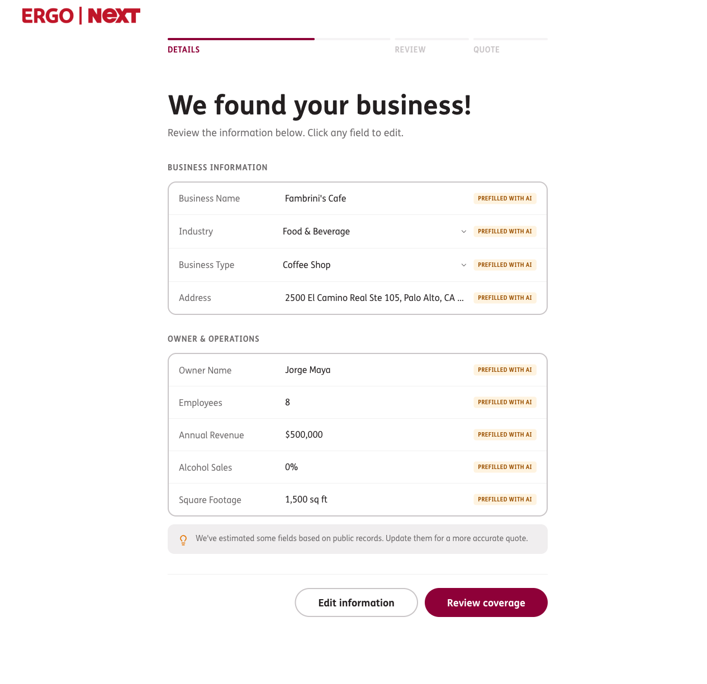
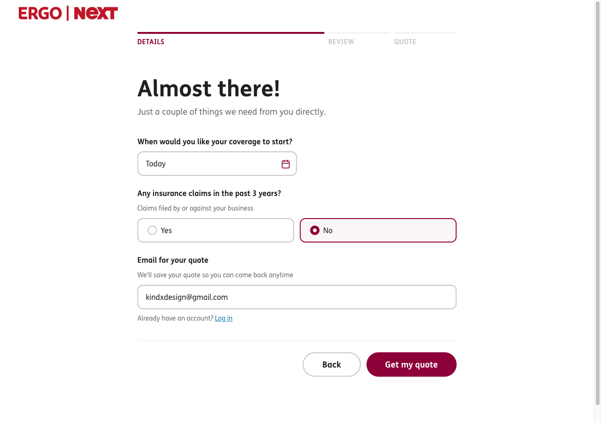
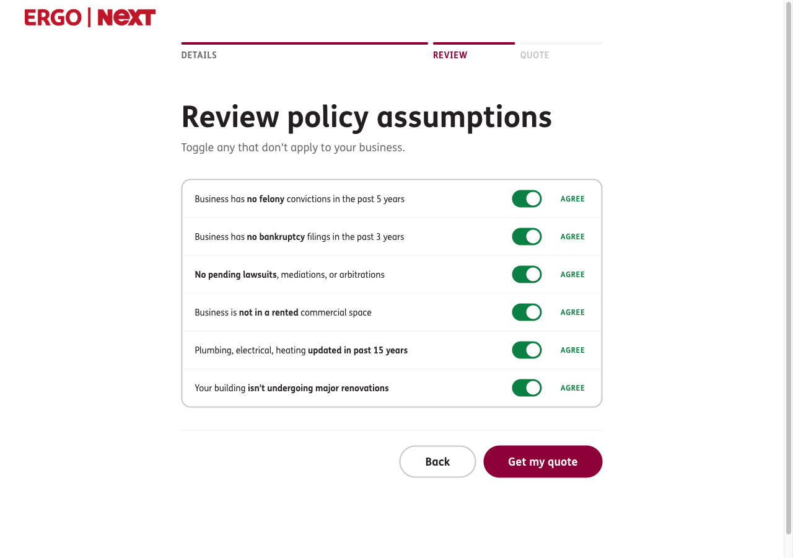
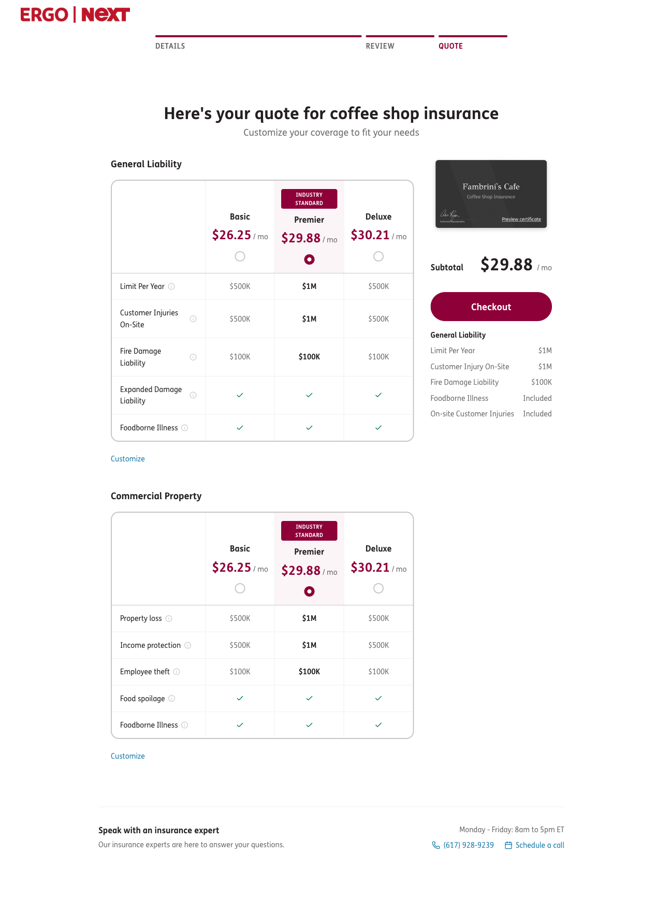

A small-business insurance flow that gathers data instead of asking for it. Built in Claude Code, on a design system made for AI agents.
Next Insurance sells policies to small and medium businesses, who often need coverage the same day. What sets it apart is AI underwriting: we read public data and price risk on the spot. Competitors take a day or more. ERGO Group bought the company in 2025 and rebranded it ERGO NEXT.
The shortest path ran 16+ screens of manual data entry, data the AI could already find. People dropped off partway, and sometimes the data they typed by hand came in wrong.

Shortest path · 16+ stepsThe funnel pulls what it can from public sources, then asks you to confirm or fix it, instead of starting from a blank form.
A verified match shows up with its category, and there's always a manual route for anyone we can't find.
The note under the search explains how the system works: we use public records, and you review and validate everything before the quote.

Instead of a blank spinner, the gather step tells you what it's checking as it goes: business profile, industry, registration records, size estimates, then savings for the quote.
Naming each source builds trust in where the data's coming from. It also turns a few seconds of waiting into something that feels like work being done for you.

Every field shows up pre-filled and editable in place, tagged “Prefilled with AI.” Where it came from is visible.
Users trusted the system because they could see the answers and correct them if needed. We highlighted fields with low certainty as estimates to avoid trust issues.

By only asking for data we couldn't find, we cut the manual part from sixteen screens down to a few real questions, all on one screen.

A short set of underwriting assumptions, written as plain-language toggles. Most people just agree and keep going.
If something rules them out, they don't hit a rejection. They get handed to a partner who can cover them. The edge case turns into a handoff instead of a wall.

A recommended plan comes pre-selected and marked “industry standard.”
The coverage limits are all visible, so the user understands the price.

I built this whole flow in Claude Code, out of the ERGO NEXT design system I'd also generated with Claude Code. The component names and tokens map straight to the production code.
It was a production-grade prototype made from the real component library.
This was possible because the design system and semantic tokens were already built, which made it easy to vibe code with the real components and tokens that were in Storybook and GitHub.
Semantic tokens, text styles, components, everything carried over from the design system into the funnel. That's why I was able to focus on the experience instead of the implementation.
Conversion lift measured Jan 2026. ARR growth is company-wide context; the funnel was one contributor among several (conservative attribution).
The gather step pulls real business data from public sources. In the three weeks it was live, it lifted conversion 7%. Then the legal team flagged a risk: the same auto-fill could let someone pull competitive intel on a business they don't own.
So we paused it and changed the gate instead of killing it. Now it only runs for logged-in accounts that have verified they own the business. We kept the win and closed the hole.
This was built fast, to test the idea and ship it. The design system under it was tuned for speed and 1:1 code parity, not for visual polish. The next move is to grow and refine that component set so the whole funnel looks sharper.
Get through the privacy and legal review and bring the paused 16→6 gather-and-validate flow back to production.
Take the gather-and-validate model to the other industry flows too: construction, professional services, retail, not just food and beverage.
Happy to open the live prototype and dig into any of this. Where do you want to start?